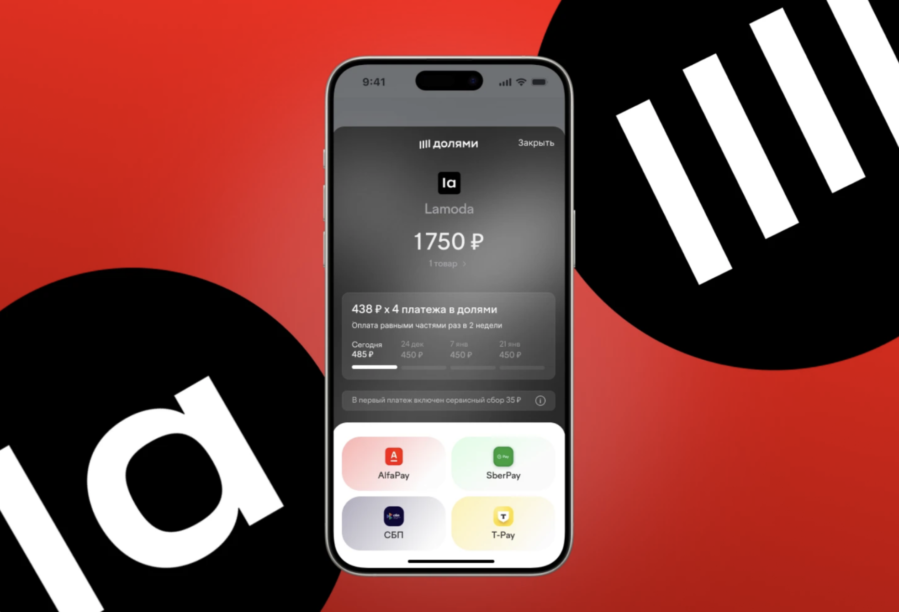
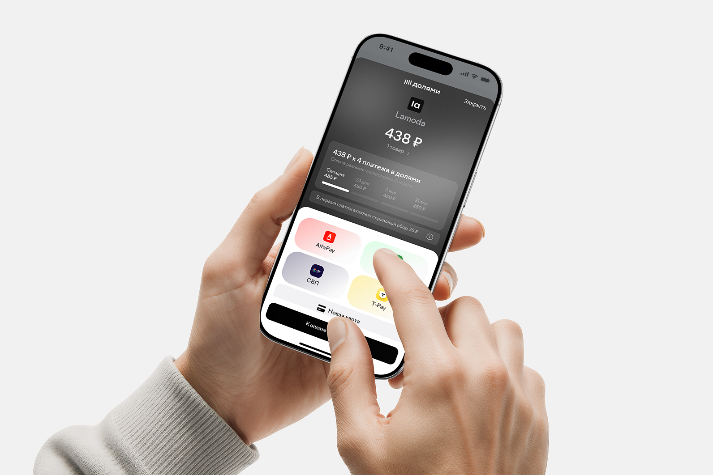
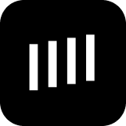
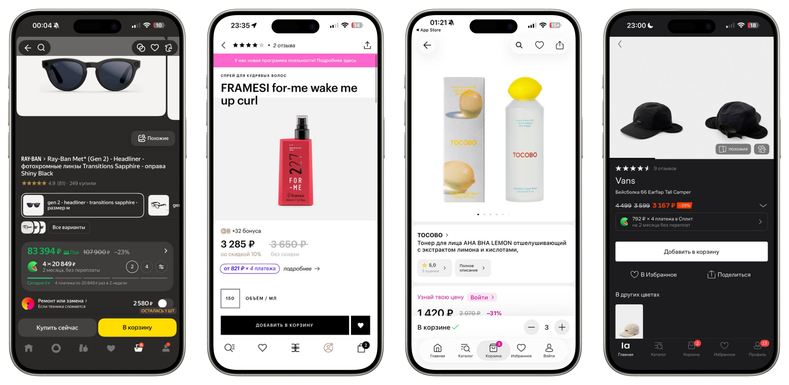
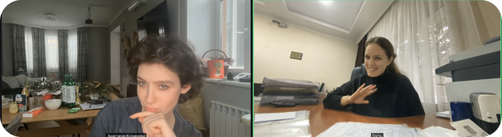
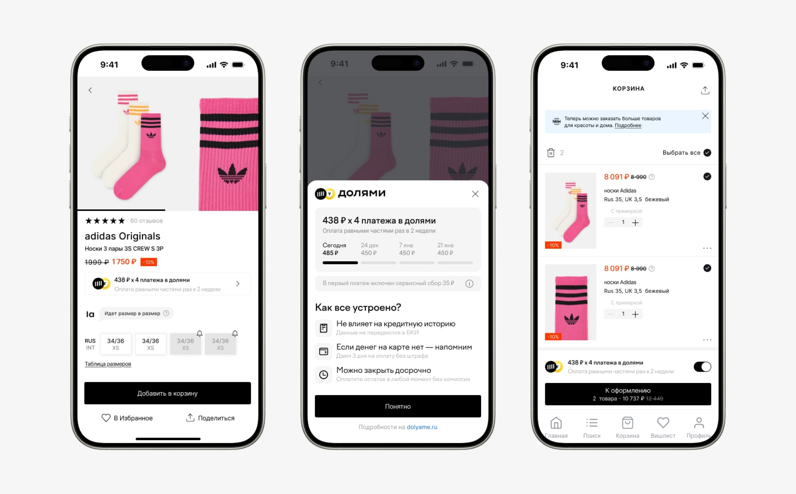
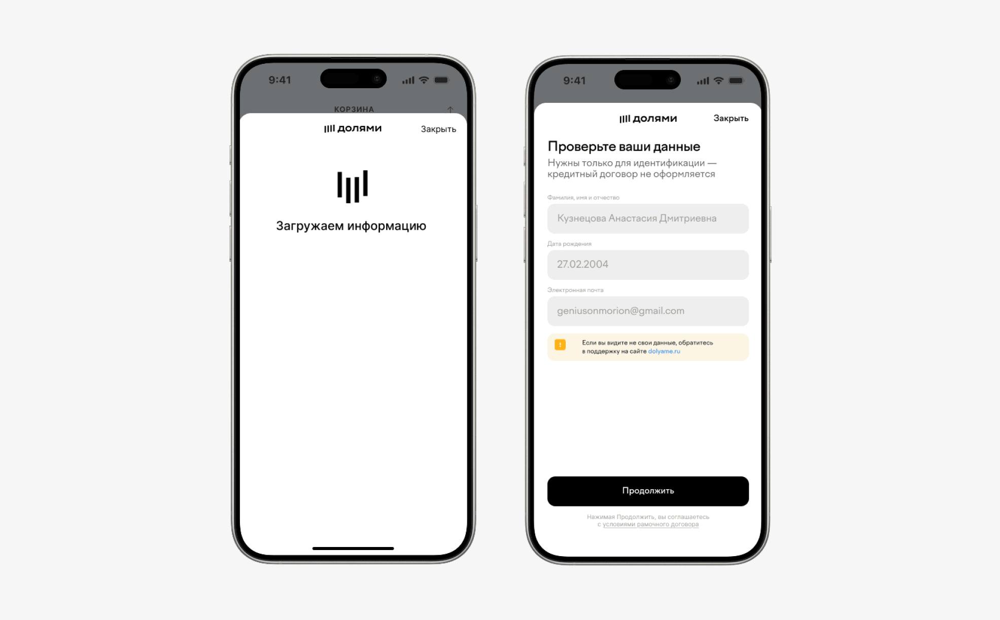
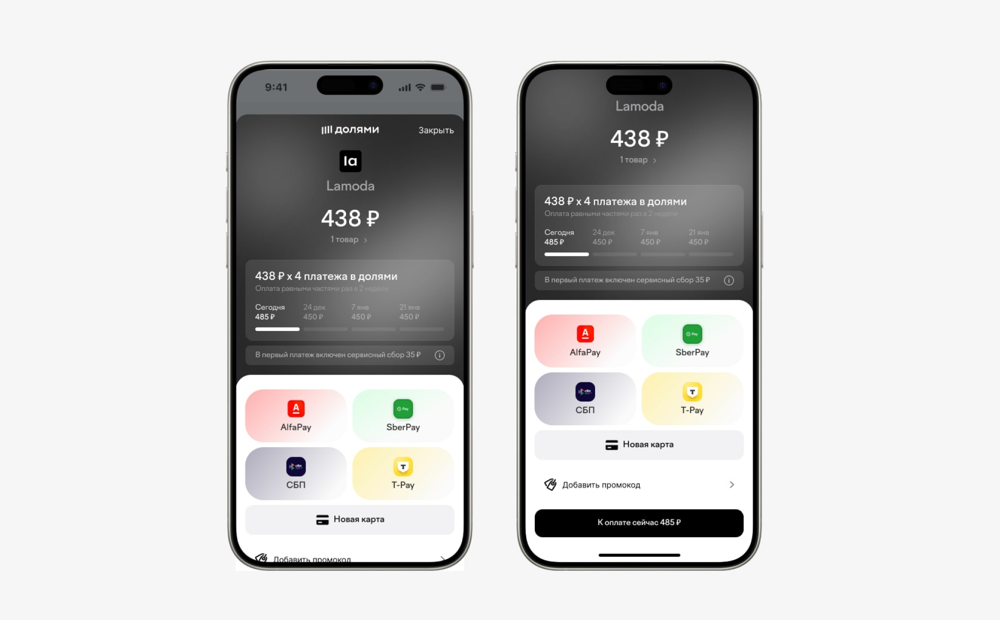
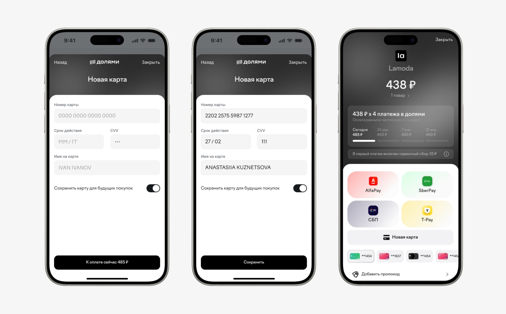

- Создан:
- 2026, Долями × Lamoda
- Тип:
- Платёжный сценарий
- Роль:
- Исследования, Продуктовый дизайн, UX/UI
- Контекст:
- Чекаут Lamoda
Редизайн сценария оплаты Долями в чекауте Lamoda. Долями — BNPL-сервис Т-Банка: покупка делится на четыре равных платежа раз в две недели, без процентов; сервис работает в чекаутах Lamoda, Золотого Яблока, Летуаль и других магазинов.
Задача — переосмыслить виджет в списке способов оплаты и первый экран сервиса так, чтобы за три секунды считывалось: это не кредит, это бесплатно и это быстро.
Проведена полная исследовательская петля: сегментация и JTBD, разбор конкурентов, приоритизация гипотез по ICE и глубинные интервью. По её итогам пересобран весь флоу оплаты — от входа в виджет до первого платежа.
Пользователи видели кнопку «Оплатить Долями», но боялись нажать: скрытые проценты, кредитная история, паспорт, штрафы. Ключевой риск — отвал на выборе способа оплаты, где страх появляется раньше, чем продукт успевает объясниться.


Бенчмарки
Разобраны BNPL-виджеты в чекаутах Яндекс Маркета, Золотого Яблока, Летуаль и Lamoda. Сильные ходы конкурентов: комиссия в рублях, а не в процентах, включение рассрочки тумблером прямо в корзине и четыре платежа, видимые сразу в списке способов оплаты. На этом фоне «возможен сервисный сбор» у Долями читается как предупреждение — сервис проигрывает не механикой, а коммуникацией.

Интервью
Гипотезы проверены на глубинных интервью с покупателями. Скептику Долями казались «долговой ловушкой», а максимальная скорость флоу выглядела подозрительной, а не удобной; тревожной покупательнице спокойнее, когда Т-Банк назван явно; прагматик покупает через BNPL больше за раз, но продукт звучит для него «финансово стыдно». Подтвердилось: прозрачность цены, видимые шаги и бренд банка сильнее обещания скорости.

Вход
Компактный бейдж рассрочки в карточке товара и боттом-шит «Как всё устроено»: график четырёх платежей, «не влияет на кредитную историю», напоминание перед списанием и досрочное закрытие без комиссии. Страхи сняты до того, как пользователь дошёл до оплаты.

Идентификация
Для авторизованных пользователей поля предзаполнены, а подпись «кредитный договор не оформляется» убирает ассоциацию с микрозаймом. Скорость сама по себе вызывала подозрение — поэтому в флоу оставлено умное трение: короткий шаг проверки данных.

Оплата
Основной путь — кнопки банковских пеев: AlfaPay, SberPay, СБП и T-Pay; график платежей и сервисный сбор видны на самом экране оплаты, а не спрятаны в условиях. Ручной ввод карты остался запасным сценарием, а не главным.

Детали
Новая карта добавляется без ухода со страницы оплаты, сохранённые карты доступны в один тап под пеями. Состав заказа, объяснение сервисного сбора и промокод открываются в боттом-шитах — платёжный экран остаётся одним.

Метрики
Концепция не дошла до продакшн-теста, поэтому вместо результатов зафиксированы измеримые гипотезы. Главная — отвал на выборе способа оплаты: страхи сняты до платежа, значит, доля ушедших с этого шага должна падать. Дальше — доля выбора Долями среди способов оплаты, конверсия в первый платёж и доля ручного ввода карты против пеев: если пеи стали основным путём, флоу сократился. Следующий шаг — A/B на реальном трафике чекаута Lamoda.